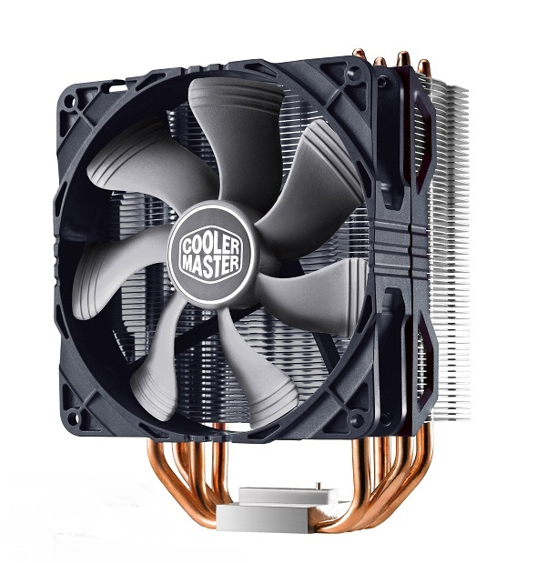
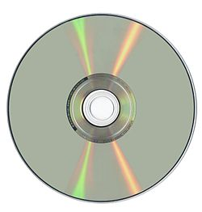
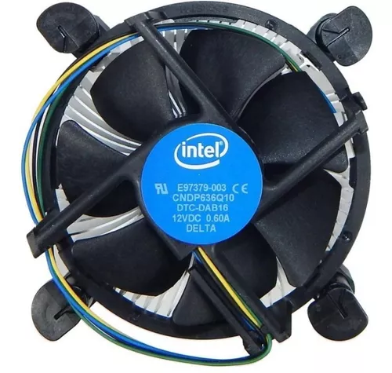
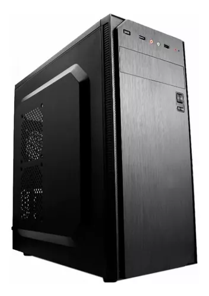
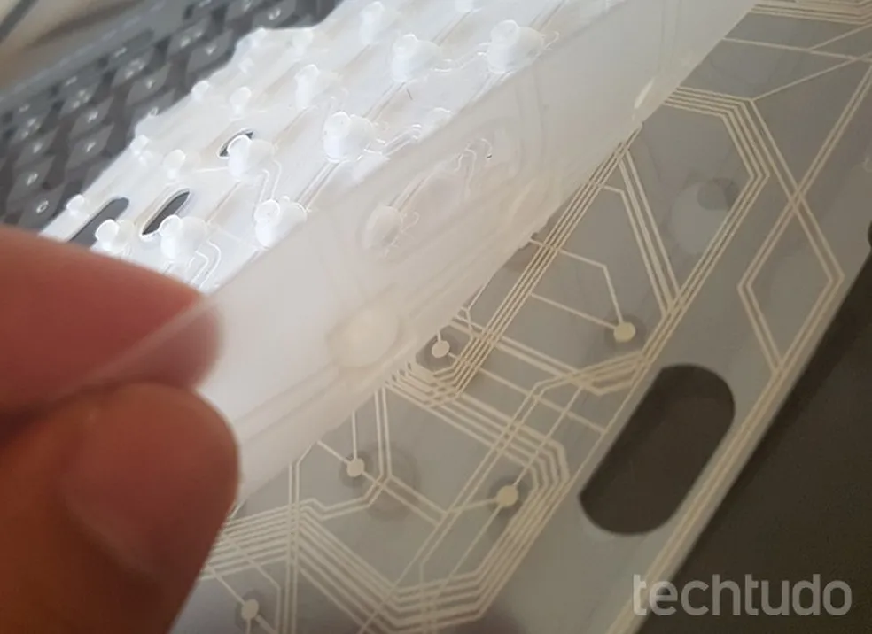
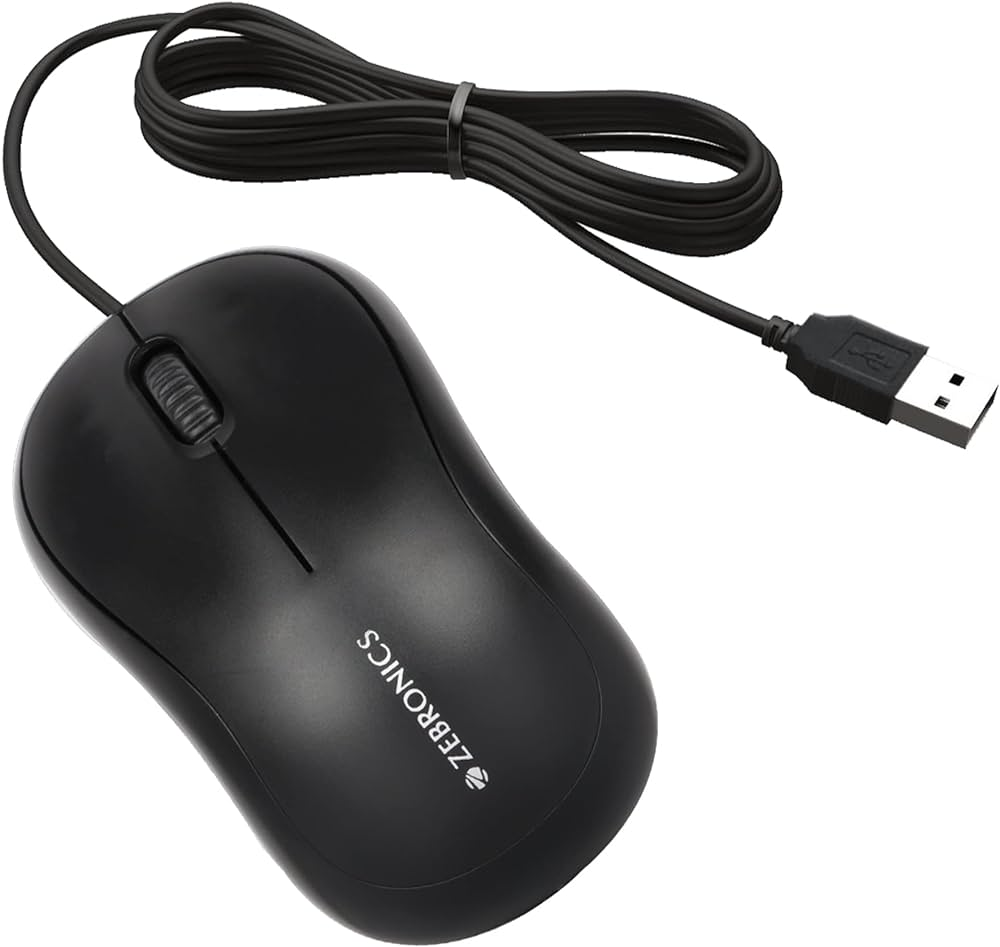
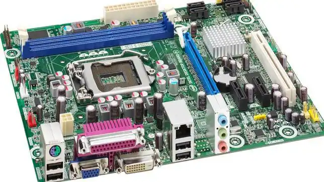
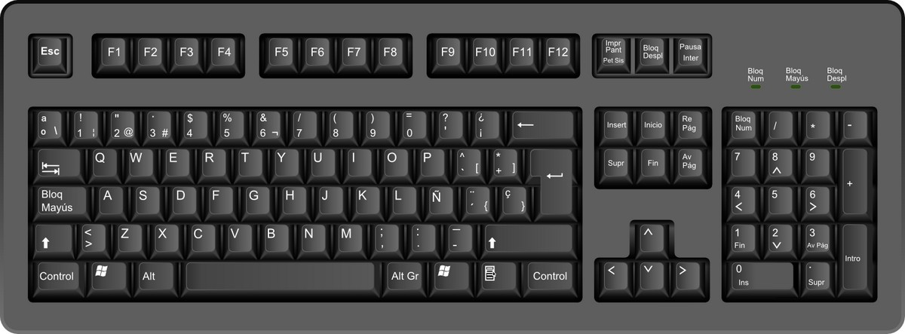
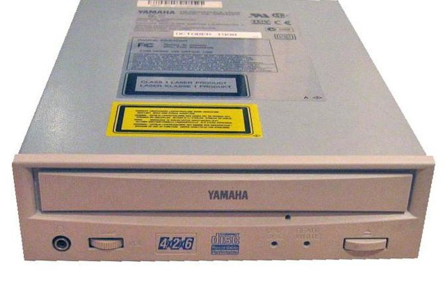

Glosario
- Disipador de calor:
- DVD:
- Fancooler:
- Gabinete:
- Membrana digital:
- Memoria Ram:
- Mouse:
- Placa Base:
- Teclado:
- Unidad de Disco:
D
Es un instrumento que se utiliza para bajar la temperatura de algunos componentes electrónicos. Su funcionamiento se basa en el principio cero de la termodinámica, transfiriendo el calor de la parte caliente que se desea disipar al aire. Este proceso se propicia haciendo circular el aire, permitiendo una eliminación más rápida del calor excedente.
El DVD es un tipo de disco óptico para almacenamiento de datos. La sigla DVD corresponde a Digital Versatile Disc, de modo que coinciden los acrónimos en español e inglés.
F
El fan cooler es ese pequeño ventilador que viene generalmente instalado en el gabinete de tu ordenador; tiene como tarea principal ventilar el aire que se encuentra dentro de la computadora, con el único fin de regular su temperatura.
G
Es la estructura metálica o plástica, cuya función consiste en albergar y proteger la mayoría de los componentes de una computadora personal:Placa base Tarjetas de expansión Microprocesador y sus sistemas de refrigeración
M
Es una capa de material plastico que registra las pulsaciones de las teclas de un teclado

Es una memoria de almacenaje a corto plazo. El sistema operativo de ordenadores u otros dispositivos utiliza la memoria RAM para guardar de forma temporal todos los programas y sus procesos de ejecución. En la RAM se cargan todas las instrucciones que ejecuta la unidad central de procesamiento (CPU) y otras unidades del ordenador, además de contener los datos que manipulan los distintos programas.

Es un dispositivo de entrada diseñado para manipular objetos en la pantalla de la computadora y ayudarlo a el usuario, a interactuar con la computadora.
P
Es una tarjeta de circuito impreso a la que se conectan los componentes que constituyen la computadora.
T
Es un dispositivo de entrada que utiliza una disposición de teclas, para que actúen como interruptores electrónicos que envían información a la computadora. El teclado tiene entre 99 y 108 teclas; y, está dividido en cuatro bloques: de funciones, alfanumérico, especial y numérico.
U
se refiere al aparato o dispositivo de almacenamiento de datos que realiza las operaciones de lectura o escritura en los medios o soportes de almacenamiento con forma de disco
